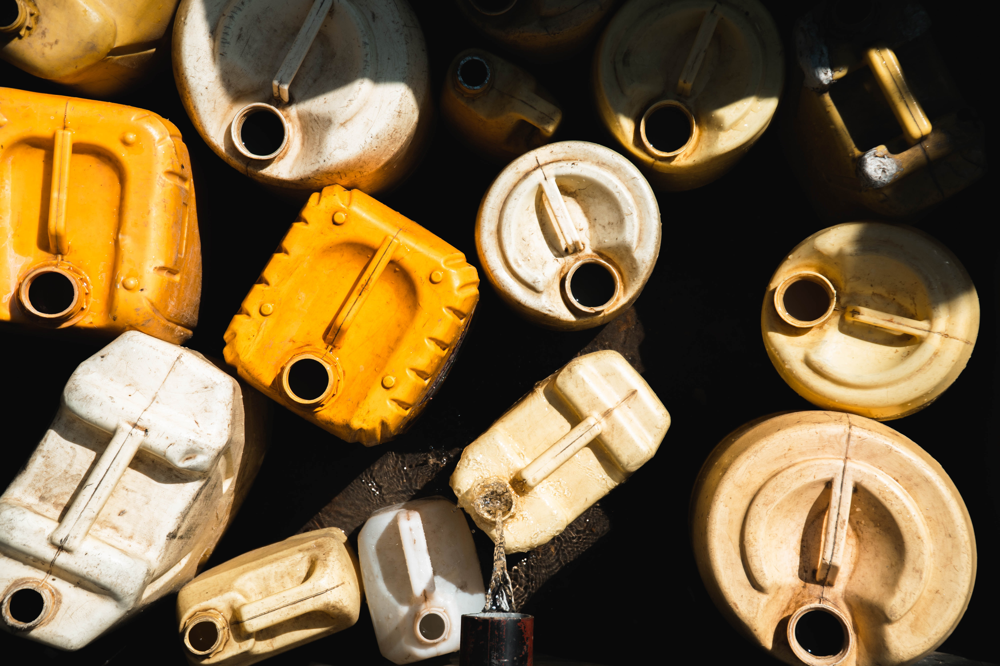

Understanding Recycling Symbols
Recycling symbols can be found on everyday items to indicate how their packaging can be recycled..
The on-pack recycling label (or OPRL)
Look for these labels on packaging to see if it's recyclable or if you need to take it to a
recycling center: soft drink cans, bread bags, and plastic toiletry bottles.
Local authorities have different collection policies, so the labels are based on the majority.
If you're unsure about what can be recycled in your household bin or how to recycle certain items
like mobile phones and textiles, simply use our Recycling Locator tool by entering your postcode.
NOTE: Not all packaging has a recycling label, but it can still be recycled.
Recycle

Do Not Recycle
Recycle | Rinse

Recycle | Rinse | Lid on